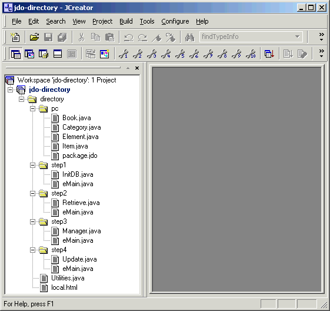
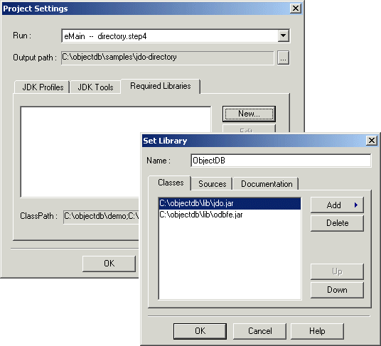
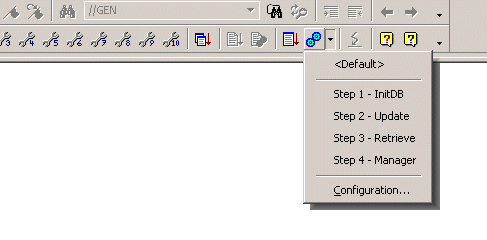
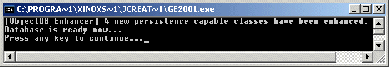
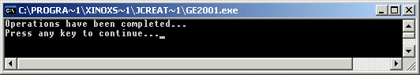
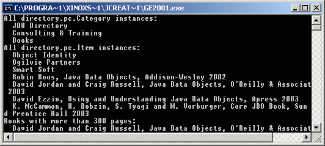

The JDO Directory demo has been tested with JCreator LE version 2.50.
Open the WorkspaceOpen the jdo-directory.jcw workspace file, by either double clicking on the workspace file or by File => Open Workspace... from the IDE menu.

Set the ObjectDB Library
Open the Project Settings dialog
(Project => Project Settings... in the menu).

In the Set Library dialog, specify ObjectDB as the library name, and use the Add => Add Archive... command to add jdo.jar and ObjectDB jar file (odbfe.jar / odbse.jar / odbee.jar) located in the ObjectDB lib directory. After closing the Set Library dialog, with OK, check the checkbox in the new line added to the Required Libraries list, and then close the Project Settings dialog with OK. Creating the library is a one time operation, but selecting it is required in every project which uses ObjectDB and JDO.
Build & RunAfter setting the ObjectDB library, compile all the demo source files using Build => Compile Project. The Build => Execute Project command will run step 4 (the visual manager). To run the other steps use the Execute Project tool in the toolbar.

Step 1
The expected output is:

The [ObjectDB Enhancer] message, indicating "on the fly" JDO enhancement of four persistence capable classes, is not shown if these classes are already enhanced.
Step 2
The expected output is:

Step 3
The expected output is:

Step 4

Copyright (C) 2001-2004 by ObjectDB Software. All rights reserved.
|